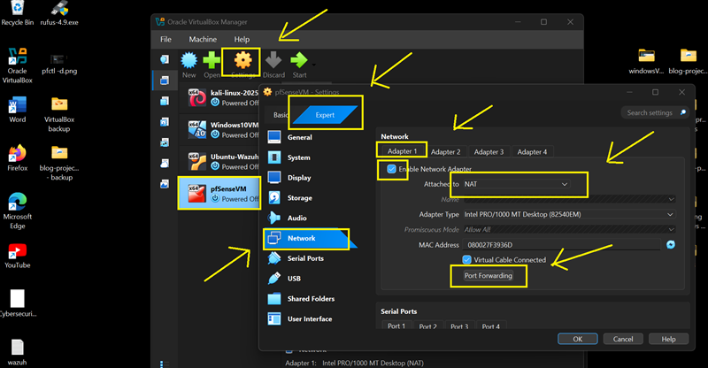
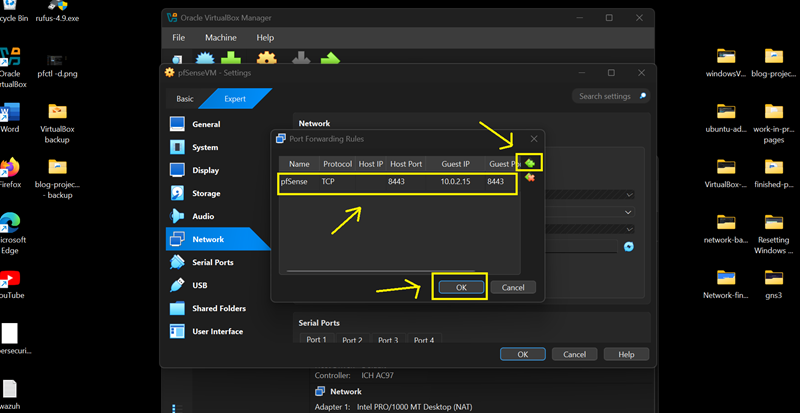
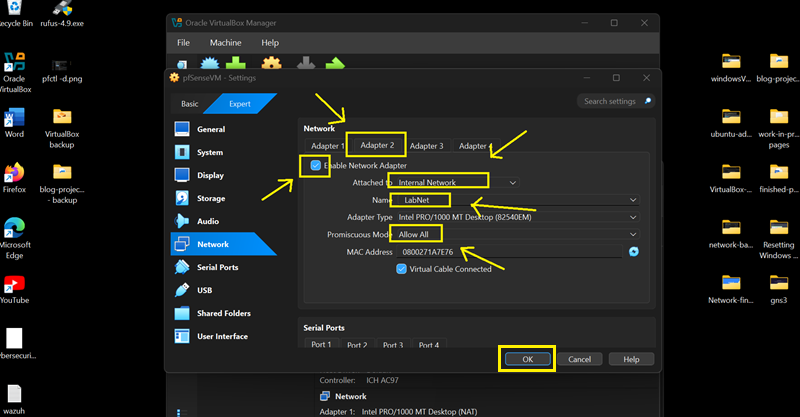
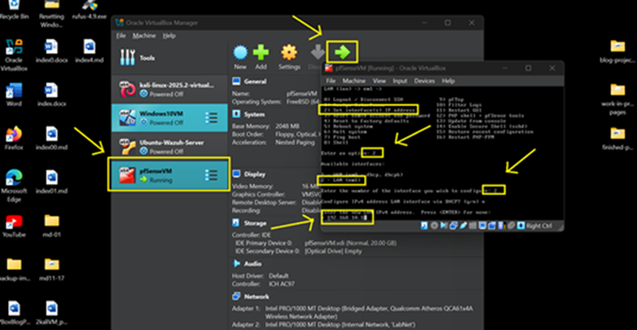
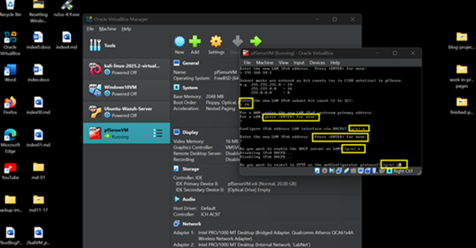
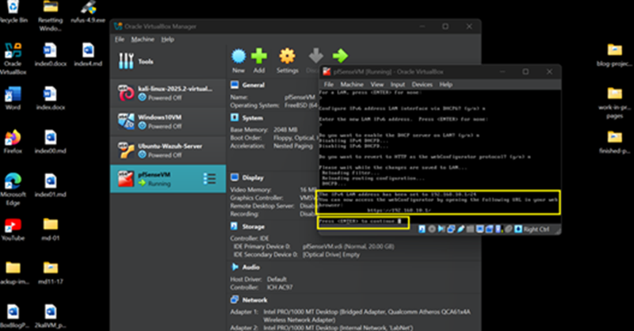

Overview
pfSense is configured with two interfaces: WAN (NAT) and LAN (Internal Network). This allows isolation between external traffic and internal lab systems.
Step 1 — Configure Virtual Adapters
WAN (NAT)
- Adapter Type: NAT
- Promiscuous Mode: Allow All
- Port Forwarding: Enabled

Port Forward Rule:
- Host Port: 8443
- Guest Port: 8443
- Protocol: TCP

LAN (Internal Network)
- Adapter Type: Internal Network
- Name: LabNet
- Promiscuous Mode: Allow All

Step 2 — Set LAN IP Address
- Interface: LAN (em1)
- IPv4 Type: Static
- IP: 192.168.10.1/24
- DHCP: Disabled



Access Web Interface
Once configured, access pfSense via:
https://192.168.10.1:8443
- Username: admin
- Password: admin
If access fails, disable packet filtering:
pfctl -d
Configuration Complete
pfSense now provides WAN/LAN segmentation for the lab network and can now be used for practicing firewall rule implentations.